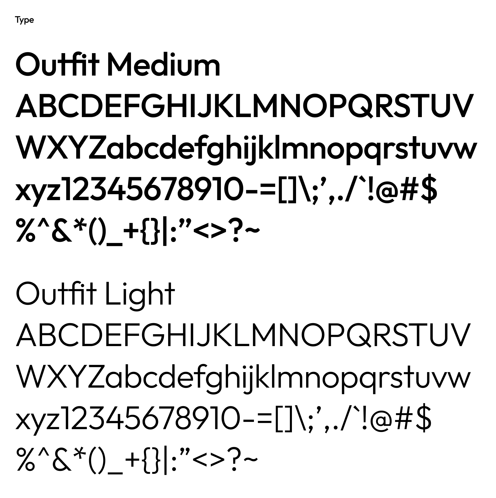
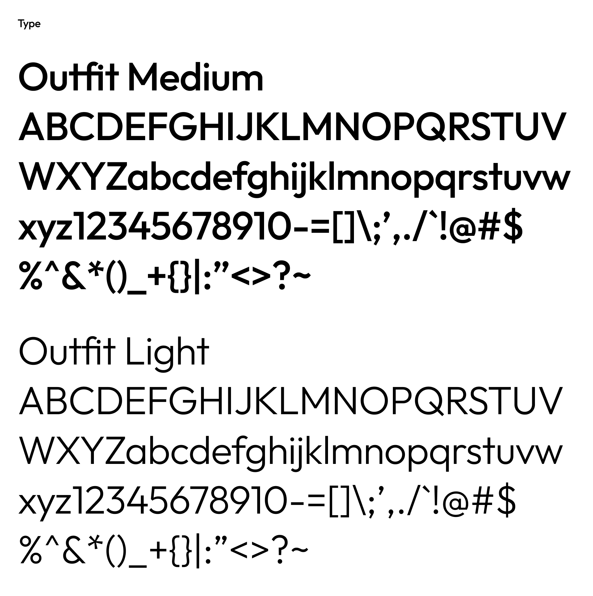

Goby Global
Created the visual branding for Goby Global, a consulting service known
for their prominent news outlet covering the healthcare and biotech
industry in Asia for the global audience. Created logo, wordmark, design
of newsletter, and website design, ensuring a sophisticated and impactful
visual identity.
Visit site
Branding & Website Design

 
